1. PETRONAS Twin Towers
The PETRONAS Twin Towers is a destination you cannot (and will not) miss when visitng Kuala Lumpur. Standing 452 metres tall, it was known to be the tallest building in the world in 1998 when it was first completed and retained its world-title claim to fame until 2004 when Taipei's 101 was built. At its feet lies the iconic Kuala Lumpur Convention Center (KLCC).
KLCC is a one-stop destination for entertainment, commercial and a business focal point. It is home to some of the most popular landmarks in Malaysia, making it a popular tourist destination. With a plethora of options to choose from - dining, arts, culture, recreation, sightseeing, shopping and entertainment - you will not be stuck for ideas on what to do around here.
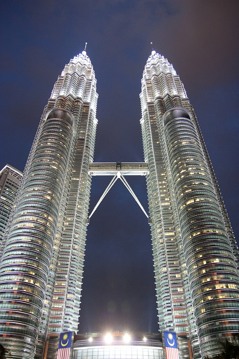 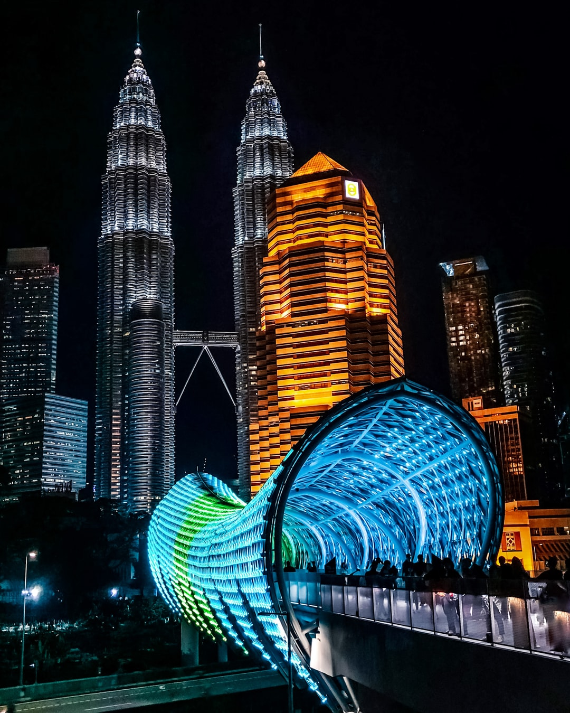 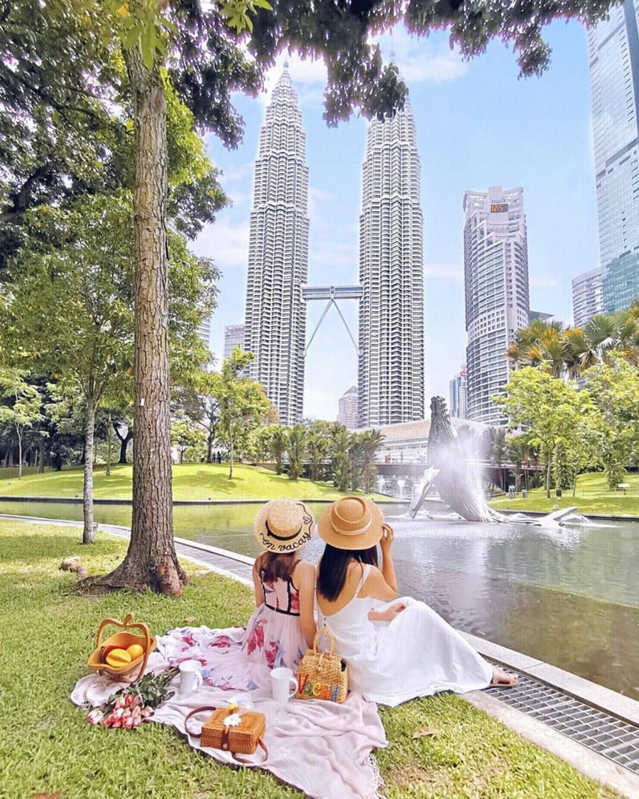 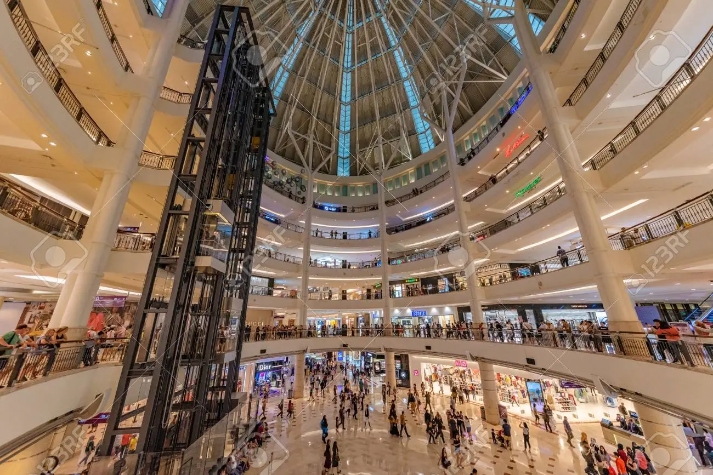2. Kwai Chai Hong
Kwai Chai Hong (鬼仔巷) is the city's latest project in preserving the Chinese heritage stretching back to as far as the 1960s. It is a small alley behind Petaling Street filled with numerous of murals that depict the life that it once was decades ago.
Kwai Chai Hong is also referred to as the "Ghost Lane" (directly translated from Cantonese). Rumor has it that the name came about long ago when the screams and laughters of mischevious Chinese-migrant kids mimicked the ‘kwai chai’ sounds.
Today, Kwai Chai Hong is filled with vibrant colors and different eateries surrounding the humble area. If you are in town, this is somewhere you definitely have to visit!
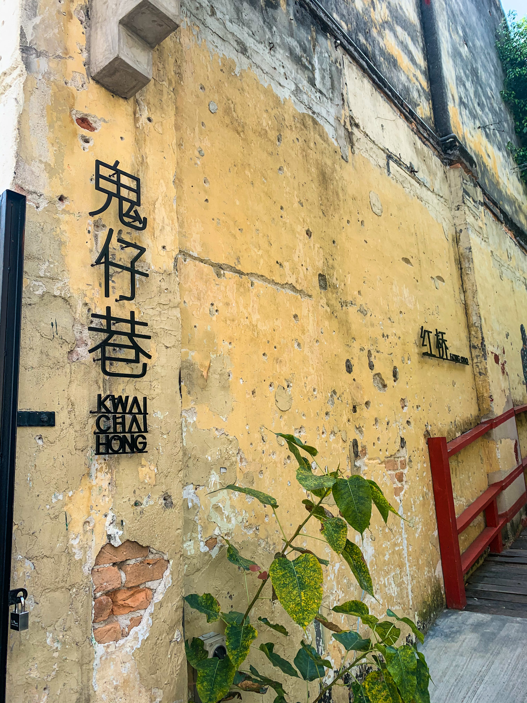 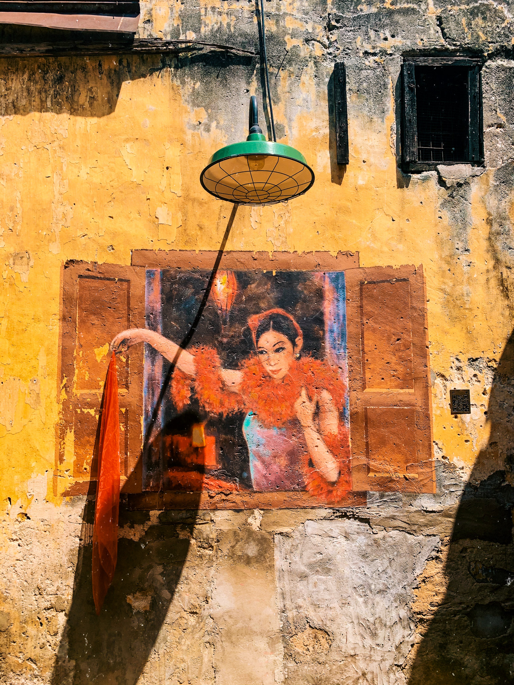
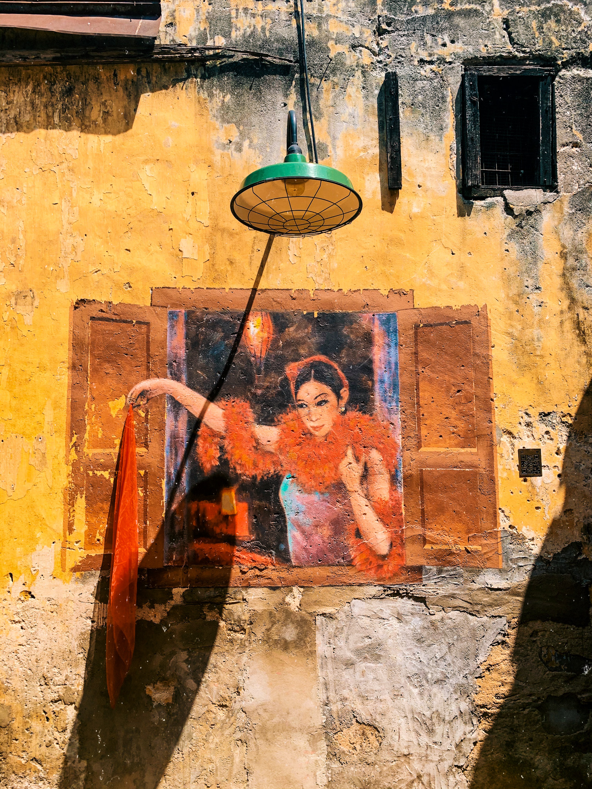
After you are done taking a trip down memory lane, stop by Ho Kow Kopitiam to quench your thirst and fill your belly with some Hainan coffee and kaya toast. PS. It is my go-to breakfast order!
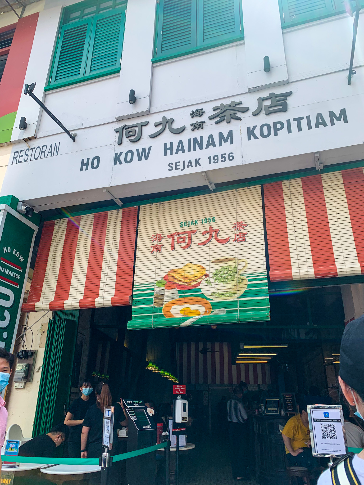
Location
Kwai Chai Hong
Lorong Panggung
Off Jalan Petaling, Kuala Lumpur
*open to the public for free from 9am to 6pm daily*
3. Batu Caves
Batu Caves is home to one of the most significant Hindu shrines in the world: a joyful homage to Lord Murugan, who triumphed over the demons in Tamil Hindu lore. The massive staircase that leads to the caves is comprised of bright bands of color. It almost feels like you are ascending a rainbow into the chambers of the gods.
The main attraction though is the Temple Cave. What you should know however, is that visitors must ascend 400 feet (123 meters) into the 400-million-year-old limestone caverns in order to get there.
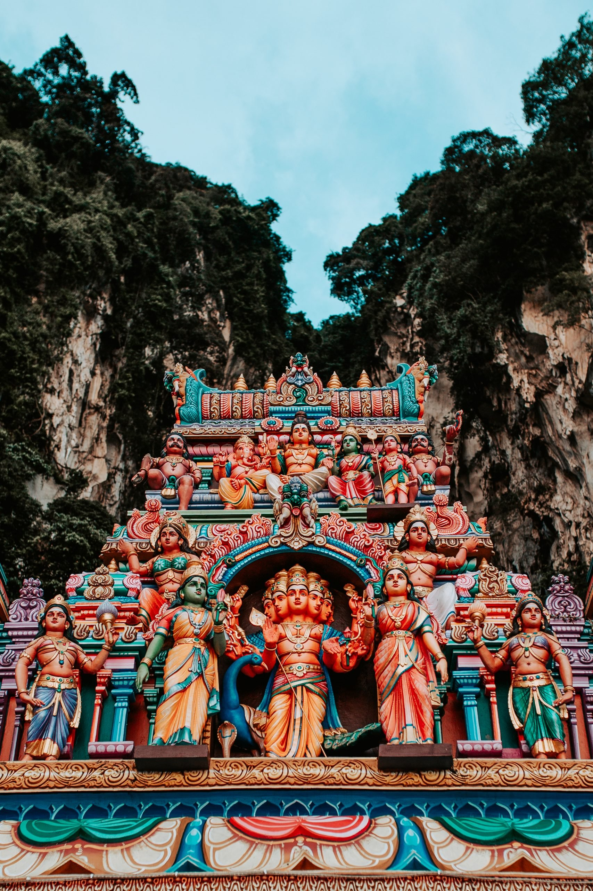 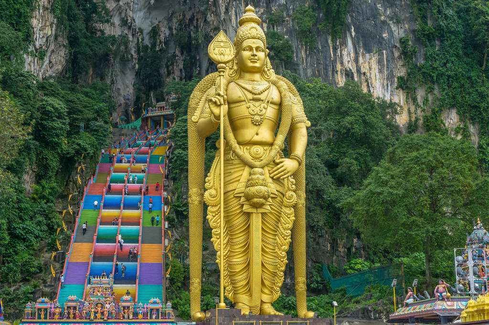 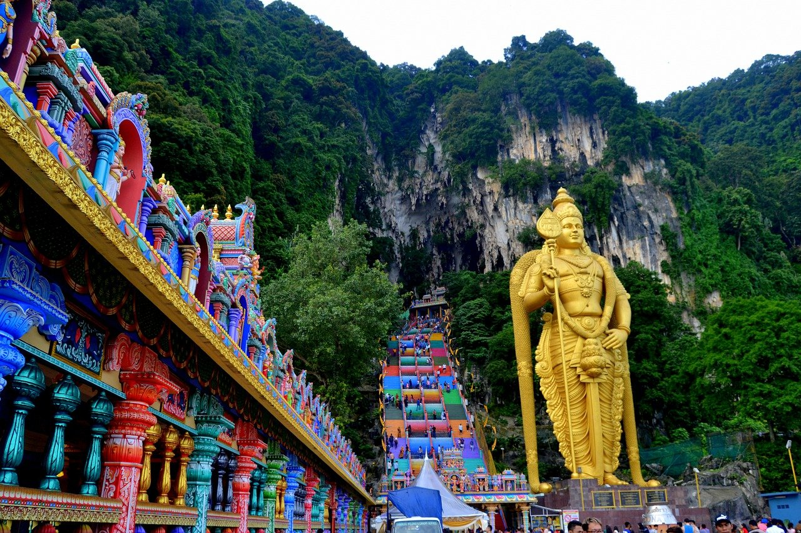